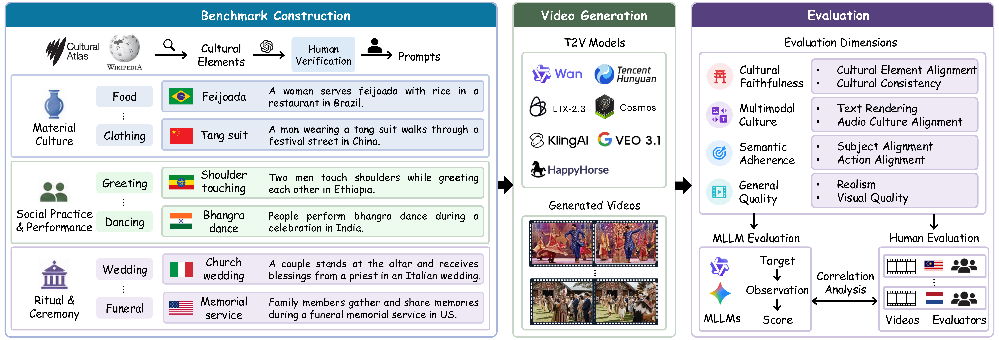
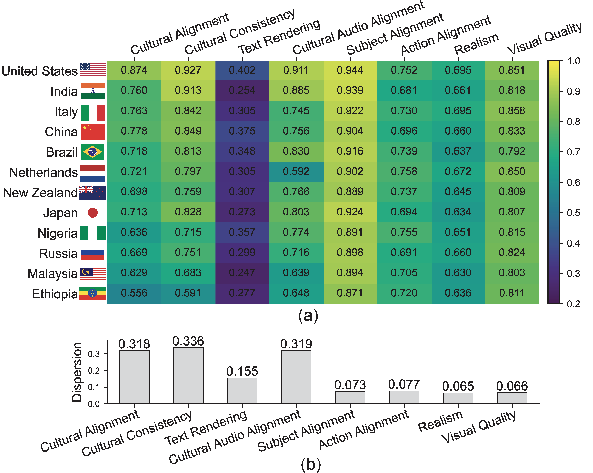
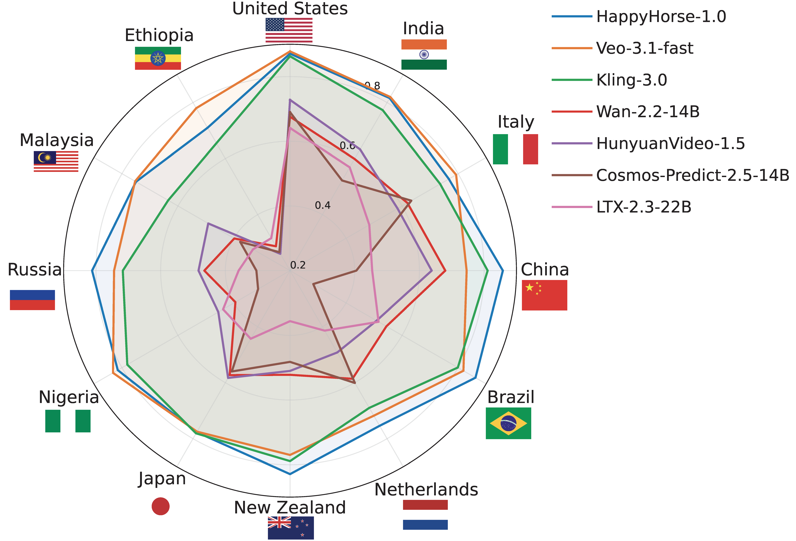
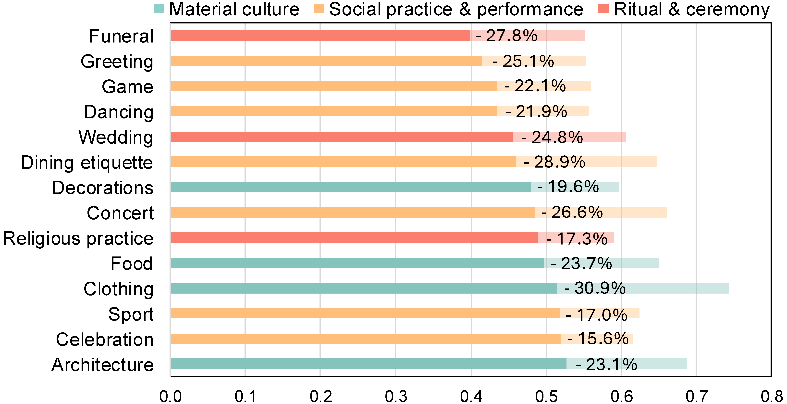

CultureVidBench: Benchmarking Cultural Understanding in Text-to-Video Generation
1Nanyang Technological University
2Centrale Supélec
3Singapore Management University
4University of Cambridge
TL;DR
T2V models are widely adopted in many applications, including filmmaking, social media content creation, advertising, and education. CultureVidBench asks a deceptively simple question: Can T2V models make content that is not only plausible, but culturally right? A generated video may appear visually plausible and semantically related to the prompt while still misrepresenting the intended culture. We evaluate seven T2V models across cultural faithfulness, multimodal cultural rendering, semantic adherence, and perceptual quality.
Framework
From culturally grounded knowledge to evaluation: prompts are curated across material culture, social practice & performance, and ritual & ceremony, then assessed by both humans and multimodal language models.

Cultural faithfulness
Element alignment and consistency with the target cultural context.
Multimodal rendering
Culturally appropriate visible text and audio.
Semantic adherence
Correct subjects and actions from the prompt.
Perceptual quality
Realism, clarity, motion, and overall visual quality.
Key Findings
Current T2V models often achieve strong semantic adherence and visual quality, yet still struggle to faithfully capture culturally specific details.
The limitation is more pronounced in underrepresented cultural regions, where models perform substantially worse than in high-resource cultures.
Material culture is generally easier to generate than social practices and rituals: models render cultural objects better than culturally grounded actions and procedures.
Multimodal cultural rendering remains particularly challenging, especially culturally appropriate visible text and audio.
Model Leaderboard
Scores are normalized to 0–1. Click a metric to sort; higher is better. “—” indicates that the model does not generate audio.
| # | Model | Average ↕ | Cultural Alignment ↕ | Cultural Consistency ↕ |
Text Rendering ↕ | Audio Alignment ↕ |
Subject ↕ | Action ↕ | Realism ↕ | Visual Quality ↕ |
|---|
The average is computed over available reported dimensions. Proprietary model names are marked with a filled badge.
Cross-country Analysis
Culture-related dimensions vary far more across countries than general semantics and visual quality. High-resource contexts remain substantially easier for current models.


Category Analysis
Semantic adherence remains consistently higher than cultural performance across all 14 aspects. Material culture—especially clothing, architecture, and food—is generally easier to render than social practices, performances, and rituals.
Current models depict distinctive visual appearances more reliably than culturally grounded interactions, procedures, and ceremonies.

Qualitative Results
Material culture
Social practice & performance
Ritual & ceremony
Incorrect cultural elementCultural inconsistency
Cultural generation failures are more pronounced in underrepresented cultural regions, which are also more susceptible to cultural interference from high-resource countries.
Citation
If you find CultureVidBench useful in your research, please cite our work.
@misc{han2026culturevidbench,
title = {CultureVidBench: Benchmarking Cultural Understanding in Text-to-Video Generation},
author = {Han, Xianjing and Su, Yuhan and Deng, Yang and Ma, Dong and Tay, Wee Peng and Zhu, Bin},
year = {2026}
}